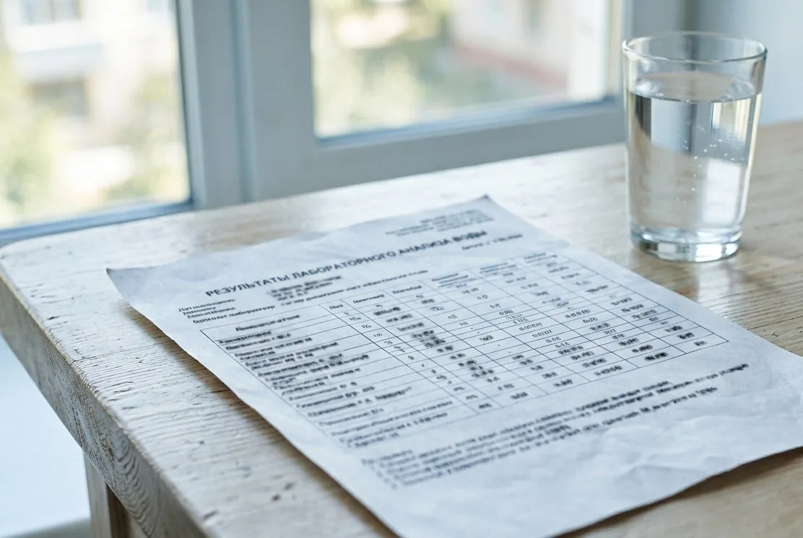

Определяем задачу
Проверяем документ, источник, дату, единицы и полноту.
Одно превышение не всегда означает одну ступень фильтра. Показатели читают в сочетании, отдельно разделяя санитарную интерпретацию и инженерный расчёт.

Сначала убеждаемся, что документ относится к нужному источнику, достаточно свежий и содержит данные для поставленной задачи.
Проверяем документ, источник, дату, единицы и полноту.
Уточняем, чего в бумаге не хватает для задачи, и называем строки, которые имеет смысл досдать.
Если новых данных не избежать, подсказываем, где и как набрать воду под недостающие показатели.
Группируем показатели по задачам и объясняем, что они меняют в схеме.
Переход от протокола к системе.
ОткрытьСопоставить цифры и симптомы.
ОткрытьПочему один анализ даёт разные бюджеты.
ОткрытьПолоски дают грубый ориентир по отдельным показателям и сильно зависят от условий: они не различают формы вещества, не привязаны к методике и не покажут того, что не входит в набор. Для подбора оборудования нужен протокол с указанием лаборатории, методов и единиц измерения.
Нет, они управляют выбором не меньше превышений: кислотность, окисляемость, щёлочность и минерализация задают, в каком диапазоне загрузка вообще работает. Санитарная оценка и предел работоспособности оборудования – разные вещи, и читают их по-разному.
Не обязательно. Одна ступень иногда закрывает сразу несколько задач, а одно превышение, наоборот, требует подготовки воды перед основной ступенью. Показатели читают в сочетании, потому что они влияют друг на друга.
Да, если на снимке читаются все страницы, единицы измерения и методы – обрезанный кадр с одной таблицей обычно приходится переснимать. Приложите к нему источник, дату и точку отбора, иначе значения не к чему привязать.
Ответим, что проверить и сколько это будет стоить.